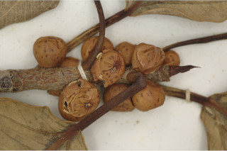
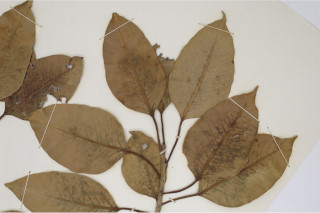
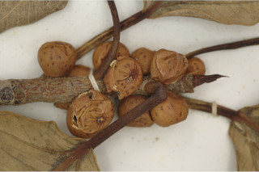
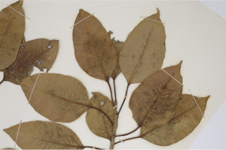

Images :

 



| Habit : | Medium sized trees , often epiphytic, to 20 m tall with aerial roots . |
| Leaves : | Leaves simple , alternate , spiral ; stipules 2.5 cm long, lanceolate , caducous , leaving annular scar ; petiole 1.5-5 cm long, canaliculate , glabrous ; lamina 5-14 x 2.5-9 cm, broadly ovate or ovate - oblong , apex acuminate with blunt tip or acute , base acute-cuneate or rounded , margin entire , thick, cartilaginous, glabrous , coriaceous ; midrib raised above; secondary_nerves 8-10 pairs, slender; tertiary_nerves reticulate , obscure . |
| Inflorescence / Flower : | Inflorescence syconia, monoecious , axillary , subsessile , depressed globose ; flowers unisexual occurs with in the inner wall of syconia. |
| Fruit and Seed : | Syconium red or purple when ripe; achenes smooth. |